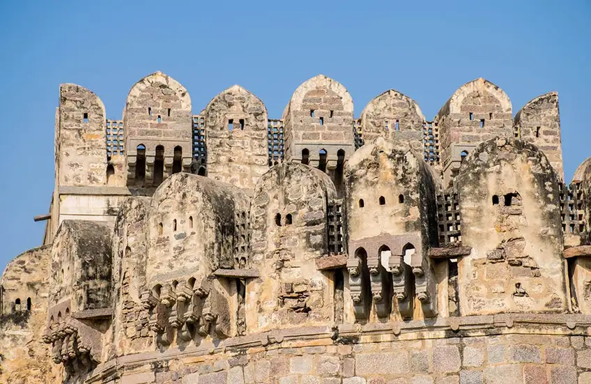

Golconda Fort
Formerly known as Mankal, Golconda fort was built by Kakatiya Kings and completed by Rani Rudrama and her successor Prataparudra. However, the structure that we see today was renovated by the Sultan Quli Qutb-ul-Mulk from Qutb Shahi dynasty, who chose Golconda to be the center of his governance. The fort is an engineering marvel and is considered one of the best Hyderabad tourist places. A hand clap at a certain place below the entrance of the dome of Fateh Darwaza echoes and can be heard at Bala Hissar pavilion, which is the highest point of the fort and is almost a kilometer away! Also, the fort has eight gateways, several temples, mosques, stables, royal chambers, and four moveable bridges. The magnificent fort is built on a granite hill and once stored the world-famous Koh-i-Noor, Hope diamond, and Daria-i-Noor. It overlooks the city and is a must visit place for magnificent architecture and historical significance.- Location: Khair Complex, Ibrahim Bagh, Hyderabad
- Timings: 08:00 am to 05:30 pm; every day
- Indian citizens - Rs. 15 per person
- Foreign nationals — Rs. 200 per person